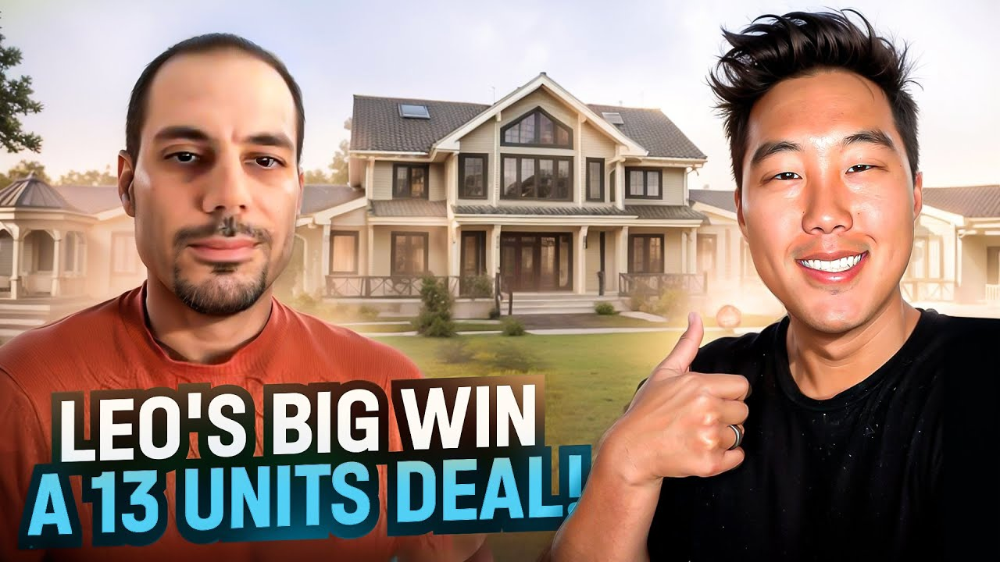

How Leo Built a $32,500/Month Airbnb Business with 13 Properties in Cleveland (2026)
See how Leo scaled to 13 Airbnb properties in Cleveland, built $32,500/month in cash flow, and used operator systems to turn early hustle into a real portfolio.

Leo earns an estimated $32,500 per month in cash flow from 13 Airbnb arbitrage properties in Cleveland. At 35 years old, with a history of entrepreneurial ventures starting from selling on eBay at age 15, Leo brought his business-building expertise to the short-term rental space. He secured his first four units and negotiated nine additional properties in a single building within months of starting. Today, his one-bedroom units net approximately $1,500/month each, while his two-bedroom units generate around $2,500/month net profit.
This case study breaks down exactly how Leo built this Airbnb arbitrage business, including his systems-first approach, storage unit assembly method, and the operational frameworks that allow him to manage everything with just 1-2 hours per week.
In this article:
Quick Results: Leo's Airbnb Arbitrage Numbers
| Metric | Value | Context |
|---|---|---|
| Monthly Cash Flow (Projected) | $32,500 | After all expenses across 13 units |
| Properties | 13 (4 live + 9 negotiating) | Cleveland market |
| 1BR Revenue/Month | $4,500 | Gross monthly |
| 1BR Expenses/Month | $3,000 | Rent, utilities, supplies, cleaning |
| 1BR Net Profit/Month | $1,500 | Per unit |
| 2BR Revenue/Month | $5,500 | Gross monthly |
| 2BR Expenses/Month | ~$3,000-$3,200 | Rent, utilities, supplies, cleaning |
| 2BR Net Profit/Month | $2,500 | Per unit |
| Time to First Deal | ~2 months | From training to units live |
| Weekly Management Time | 1-2 hours | With systems in place |
Leo's Background: From eBay Seller to Serial Entrepreneur
Leo's entrepreneurial journey began at age 15 selling on eBay, giving him two decades of business-building experience before entering Airbnb arbitrage. This extensive background in e-commerce, product development, and international business operations provided him with the systems-thinking mindset that enabled rapid scaling in short-term rentals.
Early Entrepreneurship at 15
Leo's first venture started as a teenager, buying Blu-rays, jerseys, jeans, and various items to resell on eBay. This early exposure to e-commerce taught him the fundamentals of buying low, selling high, and managing inventory and logistics. He and his cousin even started a small company called Snap that aimed to collect people's garage items and sell them on eBay for a commission.
The garage sale venture didn't work out as planned, but the experience was formative. Leo learned early that not every business idea succeeds, but each failure teaches valuable lessons about customer acquisition, operations, and market demand. These lessons would prove invaluable when building his later ventures.
Building and Selling Lil World
Leo's biggest business success before Airbnb came from Lil World, a children's nightlight company he built and sold. These silicone, rechargeable nightlights made from soft, rubbery materials became popular in the US. Parents and children loved the tap-activated, portable design.
The path to Lil World wasn't direct. Between his eBay days and the nightlight company, Leo traveled extensively, worked in different countries, set up cafeterias and nail salons internationally, and gained deep experience in general e-commerce. When he got into Amazon selling, he identified the opportunity in the children's nightlight space through market research and began developing products.
Building Lil World taught Leo product development, supply chain management, and the complexity of physical product businesses. Managing inventory, warehouses, and relationships with retailers like Disney and GameStop created what Leo describes as overwhelming moving parts. This experience would later make Airbnb arbitrage feel refreshingly simple by comparison.
"Coming from the other company that I was running that just had so many moving parts—products and inventory and warehouses and then some like Disney approach and GameStop... there's so many moving parts that it was just, I was just overwhelmed all the time. With this business I feel like the model isn't as complicated."
A Thousand Hotels of Experience
After selling Lil World, Leo moved to Europe for two years. Spain's relaxed lifestyle proved too slow for his entrepreneurial drive—he wanted to work and build things, and the culture there prioritized leisure over progress. He returned to the US ready for his next venture.
Throughout his life, Leo estimates he's stayed in close to a thousand hotels, ranging from $5/day budget accommodations in places without electricity to private planes and luxury resorts in the Maldives and South of France. This extensive travel experience across every price point gave him unique insight into what guests need for the perfect experience.
This hospitality perspective drives Leo's long-term vision. While he's currently focused on Airbnb arbitrage, his passion lies in creating unique experiences. He dreams of building distinctive hotels and resorts in the US, inspired by European experiences like Switzerland's slow-moving mountain roller coasters. He sees America's national parks and natural beauty as untapped potential for memorable vacation experiences.
"When I walk into a new place I really know, depending on the type of guest, like what exactly that guest is going to need in order to kind of create that perfect experience for them."
The Airbnb Arbitrage Journey: Leo's Timeline
Summer 2024: The Starting Point
Situation: Leo had recently returned from two years in Europe, ready for his next business venture.
After the successful exit from Lil World and an unfulfilling stint living in Spain, Leo was looking for a business that combined his love of travel, his hospitality insights, and his entrepreneurial drive. Short-term rentals offered a path to eventually build unique experiences while generating immediate cash flow.
Leo's approach was characteristically thorough. He enrolled in multiple courses, including Legacy Investing Show, attended several seminars over the summer, and immersed himself in learning the business. His previous business experience taught him that proper preparation and education accelerate success.
The Conference Decision
Situation: At a conference in Texas, an opportunity emerged that Leo couldn't pass up.
While attending a short-term rental conference, Leo connected with more experienced operators who had units in Cleveland but were pivoting to other markets. One offered to transfer units for a small referral fee. The conference presenter helped Leo run the numbers, and everything looked promising.
Leo made a decisive choice: he would fly directly to Cleveland from Texas to receive what was supposed to be five units. The decision was impulsive by most standards, but Leo's entrepreneurial instincts told him to strike while the opportunity was hot.
"I'm sitting at a conference in Texas and this is before I get started and I'm feeling really good... one of the other attendees who are a little bit more experienced, they were telling me about these units that they have but they don't really want them. So I'm like okay I'll take the units."
First Trip to Cleveland
Situation: Reality differed significantly from expectations, requiring Leo to adapt on the fly.
Leo flew to Cleveland expecting to receive five units and have everything set up within 10 days. Reality hit hard when he arrived at the building's admin office. The building only allowed four units per operator, and new units could only be added one every two weeks. His 10-day plan became a three-week stay.
Rather than becoming frustrated, Leo pivoted. He used those three weeks productively: finding a cleaning crew, hiring an operational manager, building out SOPs in Monday.com, setting up Slack communication channels, and creating repeatable systems. The first two units he set up himself, learning every aspect of the operation firsthand.
For subsequent units, the systems he built kicked in. His operational manager on the ground and his virtual assistant could repeat the established processes without Leo being present. The formula was now documented and scalable.
Scaling to 13 Units
Situation: With four units live and systems proven, Leo negotiated for nine additional units in the same building.
The relationship Leo built with the building management opened doors. By demonstrating professionalism—not clogging the mail room with packages, maintaining high standards, and being a good operator—he positioned himself for expansion. He began negotiating for nine additional units, which would bring his total to 13 properties in a single market.
His long-term vision extends beyond arbitrage. Leo is simultaneously building custom research processes for cabin investments, hiring teams for data entry and market research. He sees arbitrage as the cash-flow foundation that will fund his vision of creating unique travel experiences across America.
How to Choose a Market for Airbnb Arbitrage: Leo's Cleveland Strategy
Cleveland emerged as Leo's target market through networking at conferences, where experienced operators shared their knowledge and even offered to transfer units. The market offered favorable operator limits, reasonable costs, and strong demand fundamentals.
Why Cleveland Works for Short-Term Rentals
Leo didn't choose Cleveland through extensive solo research. Instead, he leveraged his network. At the Texas conference, experienced operators recommended the market based on their own results. One was willing to transfer units because they were expanding elsewhere.
The building Leo operates in has specific rules that work in his favor once you're established:
-
Four units maximum per operator: Limits competition within the building
-
One new unit every two weeks: Prevents oversaturation
-
Operator-friendly management: Willing to work with professional short-term rental operators
The Numbers: Based on Leo's first month of data (September), the market supports strong returns. One-bedrooms generate approximately $4,500/month revenue with $3,000 in expenses. Two-bedrooms bring in around $5,500/month with similar expense ratios. The property he's still setting up with dedicated parking should perform even better.
Building Relationships vs. Finding Units Solo
Leo's approach differed from typical market research. He built relationships at conferences, learned from people already operating in markets, and leveraged those connections to get started quickly. While he acknowledges this approach has risks (and even advises against buying referrals), the network access accelerated his timeline significantly.
His key insight: the building management relationship matters enormously. By being a professional operator who adds value rather than creating problems, Leo positioned himself to negotiate for additional units. His approach of using a storage unit for furniture assembly, rather than clogging the building's mail room, demonstrated the kind of thoughtfulness that builds good relationships.
"I feel like if you're clogging up their mail and the elevator with packages, you're not really providing value, you're taking away value from their operation."
Airbnb Arbitrage Strategies That Actually Work: Leo's Playbook
Leo's success comes from applying his extensive business experience to create systems that scale. His five core strategies enable him to manage 13 properties with minimal daily involvement.
Strategy 1: Systems-First Approach
What it is: Before adding a single unit, Leo built the operational infrastructure to support 100+ properties.
Why it works: Most new operators build systems reactively, scrambling to handle problems as their portfolio grows. Leo inverted this approach. Coming from a business that overwhelmed him with complexity, he was determined to make Airbnb arbitrage scalable from day one.
During his three weeks in Cleveland, while others might have focused only on getting units live, Leo built comprehensive SOPs, set up Monday.com for task management, created Slack channels for team communication, and documented every process so it could be repeated without him.
Leo's Results with This Strategy:
-
Only 1-2 hours per week managing four live units
-
Units three and four were set up entirely by his team, without Leo present
-
Scalable foundation supports growth to 100+ units
"I was already facing before I even open the LLC, I want to make sure that I make this so that it's comfortable for me to scale to like 100 plus units."
Strategy 2: Storage Unit Assembly Method
What it is: Leo rents a storage unit where all furniture gets delivered, assembled, then transported to apartments fully built.
Why it works: This approach solves multiple problems simultaneously. Building mail rooms get overwhelmed when operators receive dozens of Amazon packages. Neighbors get frustrated with clogged elevators. Building management develops negative impressions of short-term rental operators.
By routing all deliveries to a storage unit, Leo's team assembles furniture off-site, reduces trash and packaging at the apartment, and delivers move-in-ready setups. The assembly team handles everything in the storage unit, loads it on a truck, and delivers completed furniture to the apartment.
Leo's Results with This Strategy:
-
Positive relationship with building management
-
Less trash and packaging in apartments
-
Faster unit setup once furniture is assembled
-
Ability to negotiate for additional units
Strategy 3: Cost-Effective VA Hiring
What it is: Leo found virtual assistants at $400/month instead of the $600-$800/month commonly offered through networks and groups.
Why it works: Many short-term rental communities offer "done for you" VA services at premium rates. Leo's previous business experience taught him he could source equally capable VAs directly at lower costs. The savings of $200-$400 per VA per month compound significantly across multiple team members.
His VAs handle guest communication, booking coordination, and administrative tasks. With proper training and clear SOPs from his systems-first approach, even less expensive VAs can perform effectively.
Leo's Results with This Strategy:
-
$200-$400/month savings per VA
-
Same quality of work with proper training
-
Better understanding of his specific processes
Strategy 4: Local Operational Manager
What it is: Leo hired someone on the ground in Cleveland to handle physical operations, quality control, and coordination.
Why it works: Operating out of state requires local presence for tasks that can't be done remotely. The operational manager handles furniture delivery coordination, quality inspections, working with the cleaning team, emergency responses, and anything requiring physical presence.
Leo found his operational manager during his three-week Cleveland stay. Together, they visited storage units, signed up for the one they liked, established processes for furniture delivery and assembly, and trained on Leo's quality standards.
Leo's Results with This Strategy:
-
Units three and four set up without Leo present
-
Consistent quality control across all properties
-
Quick response to any physical issues
-
Foundation for scaling to nine additional units
Strategy 5: Relationship-Based Cleaning
What it is: Rather than using turnover apps like Turno, Leo built a direct relationship with a local cleaning company.
Why it works: App-based turnover services often send different cleaners each time, meaning each person needs to learn where everything goes, what standards apply, and how the property should look. By working with a consistent team, Leo ensures his high standards are met every time.
Leo met with the cleaning company owner directly, explained his standards, created video walkthroughs together, and built checklists collaboratively. The same team handles all his properties, knows exactly where everything belongs, and maintains consistency.
"The very first or second cleaning crew that I spoke to... I wanted to work with like a solid team, like who actually has multiple people I could just talk to one person."
Leo's Results with This Strategy:
-
No cleaning-related issues after units went live
-
Consistent quality across all turnovers
-
Single point of contact for communication
-
Team knows his specific standards and property layouts
Leo's Airbnb Arbitrage Results: The Numbers
Leo's 13 properties (4 live, 9 in negotiation) are projected to generate $32,500/month in net cash flow. Here's the complete financial breakdown of his Airbnb arbitrage business.
Complete Financial Breakdown (Per Property Type)
One-Bedroom Units:
| Category | Monthly Amount | % of Revenue |
|---|---|---|
| Gross Revenue | $4,500 | 100% |
| Rent + Expenses | $3,000 | 67% |
| Net Profit | $1,500 | 33% |
Two-Bedroom Units:
| Category | Monthly Amount | % of Revenue |
|---|---|---|
| Gross Revenue | $5,500 | 100% |
| Rent + Expenses | ~$3,000-3,200 | 55-58% |
| Net Profit | $2,500 | 45% |
Note: Leo's last two-bedroom unit was still in setup at time of interview, so he noted parking hadn't been added yet, which he expects will increase performance.
Portfolio Performance Summary
| Metric | Current | Projected (13 units) |
|---|---|---|
| Properties Live | 4 | 13 |
| Properties Negotiating | 9 | - |
| Market | Cleveland, OH | Cleveland, OH |
| Monthly Cash Flow (Est.) | $8,000 | $32,500 |
| Weekly Management Time | 1-2 hours | TBD with growth |
| Data Available | September only | Full year TBD |
Key Milestones Achieved
-
Conference to Cleveland in 2 months: From learning at seminars to having units live
-
Three-week on-site setup: Built systems, hired team, launched first two units
-
Remote setup for units 3-4: Systems enabled hands-off expansion
-
13-unit deal negotiation: 4 live + 9 additional in same building
-
1-2 hours/week management: Systems running without constant attention
-
Parallel cabin research operation: Hired team building data for future unique experiences
Airbnb Arbitrage Lessons: What Leo Learned the Hard Way
These five lessons come from Leo's entrepreneurial background and his rapid entry into Airbnb arbitrage. His experience building and selling a product company gave him perspective that accelerated his short-term rental success.
"If people just follow exactly what you teach, obviously there's a little more to it when you start to get into it a little bit, but if they follow kind of exactly what you teach I believe they'll succeed."
Lesson 1: Build for Scale from Day One
The Mistake: Creating systems reactively, scrambling to handle growth as it happens.
What Leo Learned: Before opening his LLC, Leo designed his operation to handle 100+ units comfortably. He'd experienced the pain of overwhelming complexity at Lil World, with inventory, warehouses, and multiple retail relationships creating constant fires to fight. He refused to repeat that pattern.
Why This Matters: Airbnb arbitrage is simpler than physical product businesses, but only if you build systems from the start. Most operators hit a wall at 3-5 properties because they're managing everything manually. Leo's systems-first approach means adding unit #13 requires the same effort as adding unit #4.
Lesson 2: Don't Buy Referrals
The Mistake: Paying other operators for unit transfers without fully understanding the terms.
What Leo Learned: Leo admits he doesn't recommend getting units the way he did. His excitement at the conference led him to buy unit referrals and fly to Cleveland immediately, only to discover the terms weren't what he expected (one unit every two weeks instead of all at once, four unit maximum per operator).
Why This Matters: Referral fees are a shortcut that can lead to unexpected complications. Leo succeeded despite this approach because of his business experience and ability to adapt, but beginners might struggle with the unexpected changes. Finding your own units through research gives you full control.
"Don't buy the referrals, it's stupid. I only did it because I was so excited and I flew there and just did it. Don't do that. Find your own units. The research isn't complicated."
Lesson 3: Add Value to Buildings
The Mistake: Treating building relationships as transactional rather than partnerships.
What Leo Learned: Leo's storage unit assembly method wasn't just operationally efficient—it positioned him as a valuable operator to the building. While other operators clog mail rooms with packages and frustrate staff, Leo's approach adds value by keeping common areas clear.
Why This Matters: Good building relationships lead to expansion opportunities. Leo negotiated for nine additional units in the same building partly because management saw him as a professional operator who enhanced rather than complicated their operations.
Lesson 4: Start Local When Possible
The Mistake: Beginning with out-of-state operations that require extensive travel and setup time.
What Leo Learned: Leo's Cleveland operation required a three-week on-site stay to build systems, hire teams, and launch initial units. He acknowledges this was necessary but recommends beginners start locally where they can manage the learning curve without travel complications.
Why This Matters: Local operations allow you to handle issues personally, learn the business hands-on, and iterate quickly without travel expenses and time away from home. Once you've mastered operations locally, expanding to other markets becomes much easier.
Lesson 5: Avoid Analysis Paralysis
The Mistake: Over-researching and never taking action.
What Leo Learned: Leo's entrepreneurial background taught him that imperfect action beats perfect planning. He flew to Cleveland without full information, adapted when reality differed from expectations, and built his systems on the ground. The research "isn't that complicated"—action is what matters.
Why This Matters: Many aspiring operators spend months researching perfect markets, analyzing data, and preparing to launch—but never actually start. Leo went from conference to units live in two months by prioritizing action over analysis.
"Don't get into like analysis paralysis. If you find something good in your area just kind of just go for it."
Best Tools for Airbnb Arbitrage: Leo's Tech Stack
Leo manages 4 (soon 13) properties with minimal weekly time using these tools. His systems-first approach relies on technology to automate and coordinate operations.
| Category | Tool | Purpose | Why Leo Chose It |
|---|---|---|---|
| Property Management | Guesty | Channel management, booking coordination | Connects listings across platforms |
| Project Management | Monday.com | SOPs, task tracking, team coordination | Visual workflow management |
| Team Communication | Slack | VA coordination, operational updates | Organized channels for different functions |
| Inventory Management | Amazon | Supplies, furniture ordering | Routes to storage unit for assembly |
Guesty: Property Management Platform
What it does: Manages listings across multiple platforms, handles booking coordination, and streamlines operations.
How Leo uses it: After units are set up and photographed, they get listed and connected to Guesty for channel management. The platform handles the day-to-day booking operations that would otherwise require manual attention.
Monday.com: Operational Hub
What it does: Visual project management for task tracking, SOP documentation, and team coordination.
How Leo uses it: All SOPs live in Monday.com. When onboarding new VAs or operational staff, they can follow documented processes step-by-step. Tasks for new unit setup flow through Monday.com so nothing gets missed.
Slack: Team Communication
What it does: Organized messaging channels for different aspects of the business.
How Leo uses it: VAs, operational managers, and Leo communicate through organized Slack channels. Issues get routed to the right person, updates are visible to everyone who needs them, and communication doesn't get lost in email or text threads.
Leo's Advice for Airbnb Arbitrage Beginners
"If you've had a business before go for it. If you haven't had a business before still go for it."
Leo's guidance for people considering Airbnb arbitrage:
For Those With Business Experience
Your existing skills transfer directly. Systems thinking, hiring, process documentation, and operational management all apply. Leo found Airbnb arbitrage simpler than his physical product business because there are fewer moving parts. If you can run a business, you can run short-term rentals.
For Those Without Business Experience
The model isn't complicated if you follow established systems. Leo emphasizes that people who follow the Legacy Investing Show curriculum closely will succeed. The research isn't difficult, the operations can be learned, and the business fundamentals are straightforward.
Starting Local vs. Remote
Leo strongly recommends starting locally rather than attempting out-of-state operations first. His Cleveland venture required a three-week on-site stay to build systems. Starting local lets you handle issues personally while learning the business, then expand once you've proven your systems work.
Taking Action
The biggest barrier isn't knowledge—it's action. Leo went from conference to operating units in approximately two months. Analysis paralysis kills more potential businesses than bad decisions. If you find something good in your area, go for it.
Long-Term Vision
Leo sees Airbnb arbitrage as a foundation, not a destination. His passion lies in creating unique travel experiences—eventually building distinctive hotels and resorts that offer something America currently lacks. The cash flow from arbitrage funds the research and development for those bigger dreams.
"I want to build truly unique hotels and experiences... we have all these amazing national parks, the US is full of natural beauty that the rest of Europe doesn't have, and we just don't really utilize it."
Watch Leo's Full Interview
Video highlights:
-
0:00 - Leo's entrepreneurial background from age 15
-
5:30 - Building and selling Lil World nightlight company
-
10:45 - Why he chose short-term rentals after living in Europe
-
15:20 - The conference decision and flying to Cleveland
-
20:00 - Building systems during three-week on-site stay
-
25:15 - Financial breakdown: $1,500-$2,500 per unit
-
30:00 - Storage unit assembly method
-
35:45 - Advice for beginners
Frequently Asked Questions
How much money can you really make with Airbnb arbitrage?
Leo's 13-unit portfolio (4 live, 9 in negotiation) is projected to generate approximately $32,500/month in net cash flow. His one-bedroom units net around $1,500/month each ($4,500 revenue minus $3,000 expenses), while two-bedroom units net approximately $2,500/month ($5,500 revenue minus roughly $3,000-3,200 expenses).
Based on his first month of data (September), the numbers are performing as expected. His parking-enabled unit (still in setup) should perform even better. Results vary based on market selection, property type, and operational efficiency.
Is Airbnb arbitrage still worth it in 2026?
Based on Leo's experience starting in summer 2024 and scaling to 13 units within months, the business model remains viable for operators who build proper systems. His approach of systems-first thinking, relationship-based building management, and efficient operations demonstrates how to succeed even as markets mature.
Key success factors for 2026:
-
Build scalable systems from day one
-
Add value to buildings rather than creating problems
-
Focus on operational efficiency
-
Start local before expanding to remote markets
What's the biggest risk with Airbnb arbitrage?
Leo's experience highlights several risks he managed:
Referral Purchases: Leo bought unit referrals at a conference, only to discover terms differed from expectations (one unit every two weeks, four-unit maximum). He advises against this approach for beginners.
Out-of-State Operations: His Cleveland venture required a three-week on-site stay to build systems. Without proper preparation and the ability to adapt on the fly, remote operations can fail quickly.
Scaling Without Systems: Operators who don't build systems from day one hit walls at 3-5 properties. Leo's systems-first approach prevents this bottleneck.
Start Your Airbnb Arbitrage Journey
Ready to build your own Airbnb arbitrage business like Leo?
Learn more about Legacy Investing Show →
Related Success Stories
Helpful Resources
About Legacy Investing Show
Legacy Investing Show is Preston Seo's comprehensive Airbnb arbitrage training program. Since founding, the program has:
-
Trained 2,000+ students across the United States
-
Generated $10M+ in cumulative student revenue
-
Built an active community of short-term rental investors
-
Produced numerous students earning $10K+/month
Preston Seo created Legacy Investing Show to teach the exact systems that scaled his business, providing the mentorship, scripts, and community that accelerate success.
blog resources | Watch free training →
This case study is based on Leo's video interview conducted in 2024. All statistics and quotes are directly from Leo's experience. Individual results vary based on market, effort, and capital invested.
Last updated: February 25, 2026
Preston Seo
Real estate investor and financial educator helping people build generational wealth through smart investing strategies.
Sources to check before you act
Check primary guidance and your own records before you treat any page as a final answer.
- Current IRS forms, instructions, and publications for the relevant tax year
- Your actual account statements, payroll reports, entity records, and advisor memos
Educational only. Results vary. Tax, legal, and investment decisions should be reviewed with a qualified professional who can see your full situation.
Frequently asked questions
How much money can you make with Airbnb arbitrage?
Leo generates approximately $32,500/month in projected cash flow from 13 properties in Cleveland. His one-bedroom units net around $1,500/month each ($4,500 revenue minus $3,000 expenses), while two-bedroom units net approximately $2,500/month each ($5,500 revenue minus $3,200 expenses).
Is Airbnb arbitrage still profitable in 2026?
Yes. Leo started his Airbnb arbitrage business in summer 2024 and scaled to 13 units within months. His first month of data showed strong performance with one-bedrooms at $4,500 revenue and two-bedrooms at $5,500 revenue. Success depends on market selection, systems building, and operational efficiency.
How long does it take to start making money with Airbnb arbitrage?
Leo went from attending his first conference to having units live in Cleveland within approximately two months. He originally planned to set up five units in 10 days but discovered the building only allowed one unit every two weeks per operator. He stayed three weeks to set up his first two units, then his systems handled the rest remotely.
Do you need experience to start Airbnb arbitrage?
No formal real estate experience is required, but business experience helps. Leo had extensive entrepreneurial background from eBay selling at age 15, running a children's nightlight company (Lil World) that he sold, and setting up cafeterias and nail salons internationally. This experience helped him build systems for efficient scaling.
How much does it cost to start Airbnb arbitrage?
Leo recommends having capital for first month's rent, security deposit, furniture, and supplies. He hired VAs at $400/month instead of $600-800/month by finding them independently. His approach of assembling furniture in a storage unit before moving to apartments reduced costs and avoided clogging building mail rooms with packages.
What is the best market for Airbnb arbitrage?
Leo chose Cleveland based on recommendations from experienced operators at a conference. The market offered good returns and allowed multiple units per operator (four units max per operator in his building). He recommends starting locally rather than out-of-state for your first property, as his out-of-state approach required a three-week on-site stay to build systems.
Is Legacy Investing Show worth it?
Leo enrolled in Legacy Investing Show along with other courses and attended seminars during summer. Within two months of learning, he was in Cleveland signing units. He credits the training for providing the framework that enabled him to scale quickly, though he emphasizes following the system rather than buying referrals.
How do you manage Airbnb properties remotely?
Leo built comprehensive SOPs using Monday.com and Slack, hired VAs at $400/month, found a reliable cleaning crew locally, and hired an operational manager on the ground in Cleveland. His system includes assembling furniture in a storage unit, coordinating delivery to apartments, and using Guesty for property management. Without growth activities, he estimates 1-2 hours per week for management.